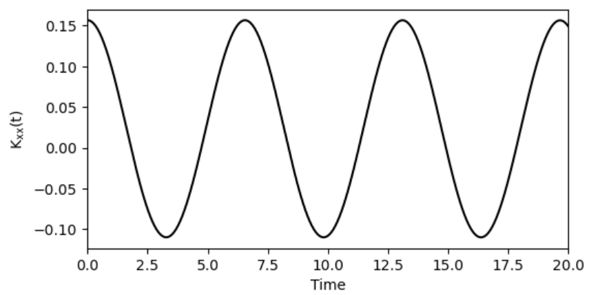

DVR Series - Part V
Kubo-Transformed Position Correlation
Wavepacket dynamics fixes a particular initial packet. A Kubo-transformed correlation function instead asks for thermal real-time memory. The example here is the position-position correlation \(K_{xx}(t)\), computed by combining DVR eigenstates with a spectral Kubo weight.
Definition
For two operators \(A\) and \(B\),
For \(A=B=x\), the function measures how much a thermal position fluctuation at time zero is remembered at time \(t\).
Energy-basis derivation
Insert energy eigenstates \(H|n\rangle=E_n|n\rangle\) into the trace. The time dependence gives
The imaginary-time integral contains the energy gap \(\Delta_{ij}=E_i-E_j\):
For \(i\ne j\), this becomes
For \(i=j\), the limit is \(e^{-\beta E_i}\). Define
Spectral formula
The Kubo-transformed correlation is then
For position autocorrelation, \(x_{ji}=x_{ij}^\ast\), so
The expression is explicitly real and even in time.
DVR matrix elements
After solving the one-dimensional DVR eigenproblem, the position matrix is approximated by
Only a finite number of low-energy states are retained in the code. That is a temperature-dependent truncation: as \(\beta\) decreases, higher-energy states matter more.

From position Kubo to flux-side
This note reuses the operator-matrix viewpoint from Parts II-IV, but the initial object is now the thermal Kubo kernel rather than a selected incoming packet. Part VI applies the same spectral weighting to a rate-like flux-side observable, and Part VII adds local adiabatic projectors for population-resolved transfer diagnostics.
Code used in this note
- dvr_kubo_minimal.py implements
kubo_correlationand fills the \(i=j\) limit explicitly to avoid a division-by-zero artifact. - source/xx-kubo/simple_CMD.py is the compact command-style source used for the \(x-x\) Kubo calculation.
- source/xx-kubo/utils/quantum.py contains the supporting DVR quantum routines from the original code folder.